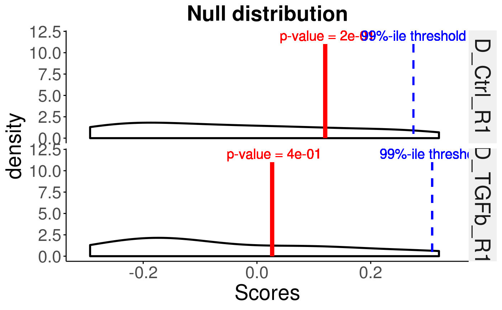
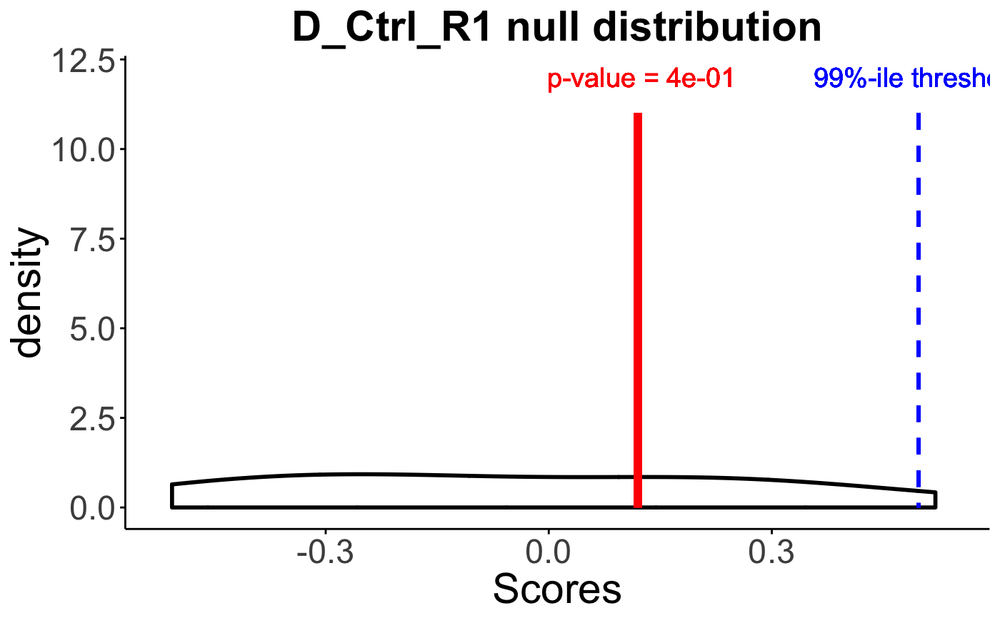

plotNull.RdThis function takes the results from function generateNull()
and plots the density curves of permuted scores for the provided samples via
sampleNames parameter. It can plot null distribution(s) for a single
sample or multiple samples.
plotNull(permuteResult, scoredf, pvals, sampleNames = NULL, cutoff = 0.01, textSize = 2, labelSize = 5)
| permuteResult | A matrix, null distributions for each sample generated
using the |
|---|---|
| scoredf | A dataframe, singscores generated using the |
| pvals | A vector, estimated p-values using the |
| sampleNames | A character vector, sample IDs for which null distributions will be plotted |
| cutoff | numeric, the cutoff value for determining significance |
| textSize | numeric, size of axes labels, axes values and title |
| labelSize | numeric, size of label texts |
a ggplot object
ranked <- rankGenes(toy_expr_se) scoredf <- simpleScore(ranked, upSet = toy_gs_up, downSet = toy_gs_dn) # find out what backends can be registered on your machine BiocParallel::registered()#> $MulticoreParam #> class: MulticoreParam #> bpisup: FALSE; bpnworkers: 1; bptasks: 0; bpjobname: BPJOB #> bplog: FALSE; bpthreshold: INFO; bpstopOnError: TRUE #> bpRNGseed: 1; bptimeout: 2592000; bpprogressbar: FALSE #> bpexportglobals: TRUE #> bplogdir: NA #> bpresultdir: NA #> cluster type: FORK #> #> $SnowParam #> class: SnowParam #> bpisup: FALSE; bpnworkers: 30; bptasks: 0; bpjobname: BPJOB #> bplog: FALSE; bpthreshold: INFO; bpstopOnError: TRUE #> bpRNGseed: ; bptimeout: 2592000; bpprogressbar: FALSE #> bpexportglobals: TRUE #> bplogdir: NA #> bpresultdir: NA #> cluster type: SOCK #> #> $SerialParam #> class: SerialParam #> bpisup: FALSE; bpnworkers: 1; bptasks: 0; bpjobname: BPJOB #> bplog: FALSE; bpthreshold: INFO; bpstopOnError: TRUE #> bpRNGseed: ; bptimeout: 2592000; bpprogressbar: FALSE #> bpexportglobals: TRUE #> bplogdir: NA #> bpresultdir: NA #># the first one is the default backend, and it can be changed explicitly. permuteResult = generateNull(upSet = toy_gs_up, downSet = toy_gs_dn, ranked, B =10, seed = 1,useBPPARAM = NULL) # call the permutation function to generate the empirical scores #for B times. pvals <- getPvals(permuteResult,scoredf) # plot for all samples plotNull(permuteResult,scoredf,pvals,sampleNames = names(pvals))#>